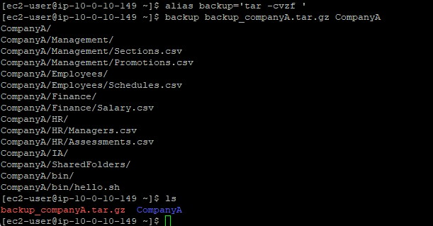
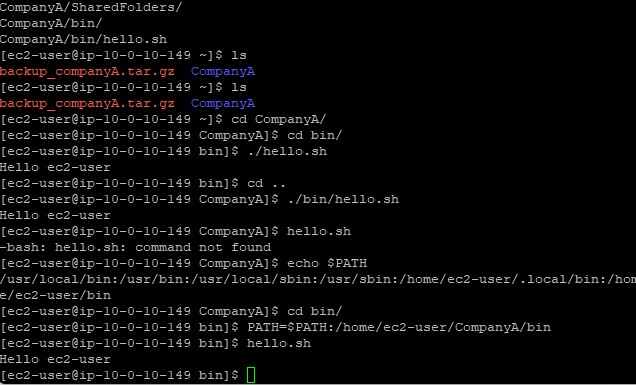

Aliases
Mapped verbose text inputs, such as tar -cvzf, to short key phrases like backup to boost terminal efficiency and reduce syntax errors.
Customize the command-line interface by binding complex commands to simple aliases and integrating custom directories into the critical Linux PATH variable.
Connected via PuTTY (as described in Lab 225). Declared a local shorthand macro targeting the tar compression engine. Encountered functional errors when attempting to execute scripts situated outside the shell's active working directory. Resolved these errors successfully by appending the scripts' structural parent directory to the $PATH variable.
Mapped verbose text inputs, such as tar -cvzf, to short key phrases like backup to boost terminal efficiency and reduce syntax errors.
Troubleshot command invocation barriers by modifying the list of directories Linux probes when deploying unrecognized strings.
Detailed record of each task performed during the lab focusing on BASH customizations.
/home/ec2-user/ folder utilizing pwd.alias backup='tar -cvzf ' binding four options to one word.backup backup_companyA.tar.gz CompanyA.backup, executing the underlying tar
binary silently, compressing records like Sections.csv and Schedules.csv.ls command revealing backup_companyA.tar.gz.
/home/ec2-user/CompanyA/bin which houses the hello.sh test script../hello.sh. The response triggered successfully as "hello ec2-user".cd .. and tested executing blindly via just hello.sh.echo $PATH.PATH=$PATH:/home/ec2-user/CompanyA/bin.hello.sh locally without absolute or relative ./ locators, attaining success
now that BASH queried the newly registered PATH boundary.
System customization utilities utilized during the session.
aliasInstructs the shell to replace one string with another string whenever executing commands.
echo $PATHRequests the shell to print the literal value of the PATH variable globally active in memory.
PATH=$PATH:/new/pathSyntax used to formally concatenate the preexisting arrays of the PATH environment alongside a new custom directory string.
alias.$PATH) securely without corrupting existing values by utilizing standard self-referencing operations.
Mastering the Bash shell elevates an operator from passively using Linux to actively configuring it.
By appending highly utilized scripts securely into the $PATH variable, custom enterprise
applications can mimic native OS behavior globally.
Aliasing remains pivotal for guaranteeing complex strings of code, such as those controlling backup compression, are not mistyped during emergencies or exhausted shifts.